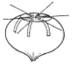

원예기능사 (2005-04-03 기출문제)
1과목: 임의 구분
1. 다음 중 무의 바람들이 현상이 생기는 시기는?
- 수확 직전부터 생긴다.
- 저장 중에 일어난다.
- 추대하는 경우에 주로 일어난다.
- 최대 생장시기 직후에 시작된다.
(정답률: 69%)

2. 다음 중 서리피해의 예방 대책이 아닌 것은?
- 개원시 냉기류가 정체하는 분지를 피한다.
- 서리의 위험이 있을 때 왕겨 등을 태운다.
- 강전정을 하거나 질소비료를 많이 준다.
- 스프링클러로 수관전체에 살수하여 준다.
(정답률: 79%)
3. 꺾꽃이 번식의 장점이 아닌 것은?
- 같은 형질의 개체를 단기간에 번식시킬 수 있다.
- 종자 번식에 비해 개화기까지의 기간이 단축된다.
- 겹꽃으로 결실하지 못하는 종류도 쉽게 번식시킬 수 있다.
- 종자 번식에 비교하여 일반적으로 발육이 왕성하고 수명이 길다.
(정답률: 80%)
4. 잎말이나방류가 과수에 피해를 주는 해충의 형태는?
- 알
- 애벌레
- 번데기
- 나방
(정답률: 86%)
5. 전조재배로서 개화가 억제되는 것은?
- 국화
- 글라디올러스
- 백합
- 히비스커스
(정답률: 98%)
6. 분화된 꽃눈의 발생순서가 맞는 것은?
- 암술 → 수술 → 꽃받침 → 꽃잎
- 꽃받침 → 꽃잎 → 수술 → 암술
- 수술 → 암술 → 꽃받침 → 꽃잎
- 꽃잎 → 꽃받침 → 암술 → 수술
(정답률: 94%)
7. 다음 중 가을국화를 제철보다 늦게 개화시키기 위한 재배 방법은?
- 일조시간을 짧게 차광 재배한다.
- 일조시간을 길게 전등 조명 재배한다.
- 온도를 높여서 개화를 늦게 한다.
- 온도를 낮게 재배하여 개화를 늦게 한다.
(정답률: 85%)
8. 히아신스와 같이 새끼 알뿌리가 잘 생기지 않을 때 그림과 같은 방법을 주로 이용하는데 다음은 어떤 번식방법인가？

- 코링
- 노칭
- 종상
- 스쿠핑
(정답률: 83%)
9. 종자 보관시 데시케이터에 사용하는 건조제는?
- 염화나트륨
- 모래
- 염화칼슘
- 질석
(정답률: 75%)
10. 꽃눈분화의 환경조건 중 온도와 일장에 영향을 크게 받지 않는 것은?
- 딸기
- 가지
- 오이
- 호박
(정답률: 53%)
11. 절화용 카네이션의 번식 방법으로 가장 적당한 것은?
- 꺾꽂이
- 깎기접
- 포기나누기
- 휘묻이
(정답률: 85%)
12. 숙성과정에서 호흡속도가 급격히 증가하는 호흡형으로 분류할 수 있는 것은？
- 감귤
- 포도
- 딸기
- 복숭아
(정답률: 81%)
13. 다음 중 무배유(無胚乳) 종자는?(오류 신고가 접수된 문제입니다. 반드시 정답과 해설을 확인하시기 바랍니다.)
- 야자류
- 선인장류
- 난류
- 토란류
(정답률: 43%)
14. 초본 및 목본 화훼류의 어린묘에 주로 발생하는 묘잘록병은 어느 때 가장 많이 발생하는가?
- 고온 다습
- 고온 건조
- 저온 다습
- 저온 건조
(정답률: 76%)
15. 고냉지 지대에 알맞는 오이재배 작형은?
- 조숙재배
- 노지재배
- 여름재배
- 억제재배
(정답률: 70%)
16. 바이러스병을 전염시키는 매개충으로 가장 적당한 것은?
- 깍지벌레
- 스립스
- 응애
- 진딧물
(정답률: 87%)
17. 종자의 저장방법으로 가장 좋은 것은?
- 온도가 높고 건조한 상태로 저장한다.
- 온도가 낮고 건조한 상태로 저장한다.
- 온도가 높고 다습한 상태로 저장한다.
- 온도가 낮고 다습한 상태로 저장한다.
(정답률: 95%)
18. 양액육묘의 장점이 될 수 없는 것은?
- 상토조제의 노력을 줄인다.
- 시설비를 절감할 수 있다.
- 물주기의 노력을 줄인다.
- 병이 없는 균일한 모종을 생산한다.
(정답률: 80%)
19. 채소원예 산업의 특성에 해당되지 않는 것은?
- 신선한 상태로 공급되는 것이 원칙이다.
- 병·해충의 피해가 많고 비교적 방제하기 어렵다.
- 일반작물에 비하여 조방적이다.
- 장기저장이 곤란하여 주년생산을 하고 있다.
(정답률: 63%)
20. 휴면이 거의 없는 딸기 품종의 재배에 알맞는 것은?
- 억제재배
- 노지재배
- 조숙재배
- 촉성재배
(정답률: 74%)
2과목: 임의 구분
21. 다음 인공광원 중 전조재배와 보광재배에 함께 이용되는 것은?
- 백열등
- 고압가스방전등
- 형광등
- 고압나트륨등
(정답률: 80%)
22. 오이를 육묘할 때 난쟁이 모종이 되었다면 다음 중 무슨 이유로 인한 것인가?
- 고온장해
- 저온장해
- 일조의 부족
- 일소
(정답률: 68%)
23. 유리온실의 구조형식 중 지붕모양이 좌우대칭으로 가장 보편화된 온실은?
- 한쪽지붕형
- 스리쿼터형
- 둥근지붕형
- 양지붕형
(정답률: 80%)
24. 관수자재 중 미스트용 노즐의 특성이 아닌 것은?
- 공중습도가 낮아진다.
- 여름철 온실 냉방용으로 사용 가능하다.
- 육묘상에 미세한 물입자 분무에 이용된다.
- 노즐의 크기는 수압, 수량, 살수반지름에 따라 결정된다.
(정답률: 83%)
25. 채소류 중에서 내염성이 가장 약한 것으로 짝지어진 것은?
- 딸기, 상추
- 토마토, 오이
- 파, 당근
- 시금치, 배추
(정답률: 77%)
26. 시설의 보온 방법에 관한 설명이 바르지 않은 것은?
- 토양수분을 과습되게 유지한다.
- 토양을 플라스틱필름으로 멀칭한다.
- 시설경계에 단열재를 묻어 준다.
- 기밀도가 높도록 한다.
(정답률: 67%)
27. 하우스 재배시 아질산 가스의 해는 어느 거름을 지나치게 많이 주었을 때 4 ‾ 6주 뒤에 발생하는가?
- 질소질 거름
- 인산질 거름
- 칼륨질 거름
- 석회질 거름
(정답률: 90%)
28. 작물생육에 중요한 가시광선의 영역은?
- 100 ∼ 380nm
- 380 ∼ 760nm
- 760 ∼ 1,150nm
- 1,100 ∼ 1,650nm
(정답률: 89%)
29. 휘록암 등을 섬유화하여 적절한 밀도로 성형화 시킨 것으로서 통기성, 보수성, 확산성이 뛰어나 양액재배용 배지로 사용되는 것은?
- 질석
- 훈탄
- 경석
- 암면
(정답률: 85%)
30. PET 필름을 설명한 것 중 맞지 않는 것은?
- 두께 0.175mm로 주로 생산되며, 경질 필름에 속한다.
- 자외선을 투과시키지 않는 것이 투과시키는 것에 비하여 수명이 짧다.
- 4,000nm 이상의 장파장은 투과율이 매우 낮다.
- 내충격성과 인장강도가 연질 및 경질 필름 중에서 가장 우수하다.
(정답률: 63%)
31. 양열온상 육묘의 양열재료를 밟아 넣을 때 주의사항이 아닌 것은?
- 마른짚에 물을 골고루 스미게 한 후 밟아준다.
- 밟은 후 양열재료를 손으로 쥐어 손가락사이로 물이 약간 나올 정도가 되도록 한다.
- 밟아 넣은 후 2∼3 일후 온도가 40℃∼45℃이면 정상이다.
- 발열이 순조로우면 모판흙을 7∼12cm 깊이로 덮어준다.
(정답률: 65%)
32. 다음 시설재배에서 병해에 대한 설명 중 틀린 것은?
- 가을에서 이른봄 사이에는 노균병, 잿빛곰팡이병이 많이 발생한다.
- 5∼9월 사이에는 시들음병, 풋마름병이 많이 발생한다.
- 고온기에는 강우가 차단되어 병해를 억제하는 효과도 있다.
- 대부분의 작물병은 건조한 조건하에서 발병이 심하게 된다.
(정답률: 69%)
33. 식물이 빛을 받아 광에너지 및 CO2와 H2O를 원료로 하여 동화물질을 합성하는 작용을 무엇이라고 하는가?
- 광합성작용
- 호흡작용
- 분해작용
- 탈질작용
(정답률: 84%)
34. 천적 미생물이나 곤충을 이용하여 병해충을 방제하는 방법은?
- 경종적 방제
- 화학적 방제
- 물리적 방제
- 생물적 방제
(정답률: 90%)
35. 식물공장의 특징이 아닌 것은?
- 도시형 농업이 가능하다.
- 작업환경이 좋다.
- 생산시기 및 생산량을 계획 조절할 수 있다.
- 동력원에 이상이 있어도 무관하다.
(정답률: 90%)
36. 시설재배에서 병·해충 발생과 가장 밀접한 관계를 가지고 있는 것은?
- 광합성
- 호흡량
- 공중습도
- 양분흡수
(정답률: 95%)
37. 다음 중 양액 재배와 관련 없는 것은?
- 무토재배
- 배지경재배
- 수경재배
- 베드농업
(정답률: 70%)
38. 피복 자재가 갖추어야 할 조건이 아닌 것은?
- 투광성이 높아야 한다.
- 열선(장파 복사)의 투과율이 커야한다.
- 열 전달을 억제하여 보온성이 높아야 한다.
- 값이 저렴하여야 한다.
(정답률: 88%)
39. 순수 수경재배시 양액관리에 필요한 센서가 아닌 것은?
- 온도센서
- 전기전도도센서
- pH센서
- 수분센서
(정답률: 80%)
40. 파이프를 이용한 아치형 하우스의 장점이 아닌 것은?
- 조립, 해체 및 이동이 가능하다.
- 규격품이 생산보급되고 있다.
- 내풍성이 강하다.
- 환기능률이 좋다.
(정답률: 73%)
3과목: 임의 구분
41. 다음 중 화훼류의 로제트현상을 타파하는 방법은?
- 저온처리
- 고온처리
- 장일처리
- 단일처리
(정답률: 38%)
42. 다음 중 꺾꽂이용 삽수의 발근 촉진제로 이용되는 식물호르몬은?
- 에테폰
- 아브시스산
- 인돌부틸산
- 벤질아데닌
(정답률: 50%)
43. 열매 채소류나 장미와 같은 화훼류의 암면 배지 등의 고형배지경에 가장 알맞은 관수 방법은?
- 살수형 관수
- 분무형 관수
- 점적형 관수
- 유공 파이프 관수
(정답률: 67%)
44. 토양의 미생물 중 태양에너지를 이용하여 광합성작용을 하는 것은?
- 조류(말류)
- 사상균
- 방선균
- 세균
(정답률: 60%)
45. 시설 내의 토양환경의 개량방법의 하나로 표토를 새로운 흙으로 바꾸어 주는 것을 뜻하는 용어는?
- 객토
- 깊이갈이
- 유기물 시용
- 돌려짓기
(정답률: 88%)
46. 가장 실용적인 염류의 농도 측정방법은 무엇인가?
- 토양용액의 전기 전도율측정
- 토양 용액의 삼투압측정
- 염류의 정량분석
- 지표식물의 재배
(정답률: 82%)
47. 식물생장에 대한 주요 환경요인 중 지하부에 주요한 영향을 미치는 것은?
- 광
- 원적외선
- 용존산소량
- 질소가스의 농도
(정답률: 64%)
48. 다음 중 온수난방의 장점이 아닌 것은?
- 넓은 면적에 열을 고루 공급한다.
- 급격한 온도 변화 없이 보온력이 크다.
- 내구성이 클 뿐만 아니라 지중 가온도 가능하다.
- 추위가 심한 지역에서는 동파될 위험이 있다.
(정답률: 88%)
49. 작물이 가장 유용하게 이용하는 토양수분의 종류는?
- 중력수(pF 0∼2.7)
- 모관수(pF 2.7∼4.5)
- 흡착수(pF 4.5∼7.0)
- 화학수
(정답률: 97%)
50. 시설내 광환경을 개선하기 위한 방법으로서 옳지 않은 것은?
- 가늘고 강한 골격재를 선택하여 차광률을 줄인다.
- 물방울이 잘 맺히는 피복재를 선택한다.
- 광투과력이 좋고, 먼지가 잘 부착되지 않는 피복재를 사용한다.
- 시설의 설치는 동·서동 방향으로 한다.
(정답률: 93%)
51. 다음 대기 성분 중 이산화탄소가 차지하는 비율은?
- 78.5%
- 0.93%
- 20.5%
- 0.03%
(정답률: 70%)
52. 시설 내는 유리나 플라스틱 필림 등의 피복재에 의해 외부와 차단되어 있어, 광합성이 활발할 때 공기에 부족하기 쉬운 것은?
- 암모니아가스
- 이산화탄소
- 아질산가스
- 아황산가스
(정답률: 91%)
53. 고온에 의해 꽃눈이 분화되는 원예 작물은?
- 상추
- 딸기
- 배추
- 시금치
(정답률: 60%)
54. 원예작물시설의 피복시 우리나라에서 가장 많이 쓰이는 재료는?
- 폴리에틸렌필름
- 에틸렌아세트산비닐
- 염화비닐
- 한냉사
(정답률: 90%)
55. 시설내 토양 수분의 특이성과 관계가 없는 것은?
- 자연강수의 공급을 받지 못한다.
- 증발산량이 많아지므로 건조하기 쉽다.
- 포장용수량이 작아져서 관수량이 적어지게 된다.
- 단열층이 지하수가 상층으로 이동하는 것을 억제한다.
(정답률: 58%)
56. 시설의 피복 자재로 알맞은 것은?
- 열 전달을 잘 할 것
- 햇빛이 잘 통과할 것
- 팽창과 수축력이 클 것
- 열선(장파)의 투과율이 높을 것
(정답률: 64%)
57. 작물의 단위 수량 증대를 위한 세가지 요소로 가장 옳은 것은？
- 유전성, 환경, 재배 기술
- 환경, 기술, 비료
- 비료, 농약, 환경
- 재배시설, 유전성, 농약
(정답률: 80%)
58. 식물체 내에서 물의 역할 중 가장 거리가 먼 것은?
- 식물의 체형을 유지시킨다.
- 식물의 체온을 조절한다.
- 화아분화를 조절한다.
- 광합성 등 화학 반응의 원료가 된다.
(정답률: 75%)
59. 대체로 시설재배시 관수를 개시하는 시기의 pF 값은?
- pF 0.5 ∼ 1.0
- pF 1.5 ∼ 2.0
- pF 2.5 ∼ 3.0
- pF 3.5 ∼ 4.0
(정답률: 70%)
60. 낮과 밤의 온도차가 작물 생육에 끼치는 영향을 가장 잘 설명한 것은?
- 낮의 고온은 광합성을 촉진하고 밤의 저온은 호흡작용을 증가시킨다.
- 낮과 밤의 온도차는 낮에 형성된 동화산물의 체내축적과 이동에 영향을 준다.
- 낮과 밤의 온도차는 증산 속도를 지배한다.
- 낮과 밤의 온도차는 양분 흡수를 저해한다.
(정답률: 64%)